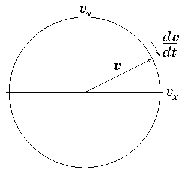

An ordinary
differential equation involves just oneindependent variable, x, and adependent variable y. Obviously it involves
derivatives of the
dependent variable like
dy
dx
. The highest
order
differential, i.e. the term
dNy
dxN
with the largest value
of N appearing in the equation, defines the order N of the
equation. So the most general ODE of order N can be written such
that the Nth order derivative is equal to a function of all the
lower order derivatives and the independent variable x:
dNy
dxN
= f(
dN−1y
dxN−1
,
dN−2y
dxN−2
,...,
dy
dx
,y,x)
(2.1)
Such an ordinary differential equation of order N in a single dependent
variable, y, can always be reduced to a set of simultaneous
coupledfirst order equations involving N dependent variables.
The simplest way to do this is to use a natural notation to denote by
y(i) the ith derivative:
diy
dxi
= y(i) i=1,2,...,N−1.
(2.2)
When combined with the original equation, the total system can be
written as a first-order vector differential
equation whose components are
(where for notational consistency y(0)=y). Explicitly in vector form:
d
dx
⎛ ⎜ ⎜ ⎜
⎜ ⎜ ⎝
y(0)
y(1)
:
y(N−1)
⎞ ⎟ ⎟ ⎟
⎟ ⎟ ⎠
=
⎛ ⎜ ⎜ ⎜
⎜ ⎜ ⎝
f0
f1
:
fN−1
⎞ ⎟ ⎟ ⎟
⎟ ⎟ ⎠
=
⎛ ⎜ ⎜ ⎜
⎜ ⎜ ⎝
y(1)
y(2)
:
f(y(N−1),y(N−2),...,y(1),y(0),x)
⎞ ⎟ ⎟ ⎟
⎟ ⎟ ⎠
.
(2.4)
Recognizing that the combined simultanous vector system of dimension
N with first-order derivatives, is equivalent to a single scalar equation
of order N, we often say that the order of the coupled vector system is
still N. (Sorry if that seems confusing. In practice you get the
hang of it.)
This is formal mathematics and applies to all equations, but precisely
such a set of coupled first-order equations will often also arise
directly in the formulation of the practical problem we are trying to
solve. Suppose
we are trying to track the position of a fluid element in a three
dimensional steady flow. If we know the fluid velocity v
as a function of position v(x), then the equation of the
track of a fluid element, i.e. the path followed by the element as it
moves in time t, is
d
dt
x = v.
(2.5)
This is the equation we must solve to find a fluid
streamline. It is of just the same form we derived
by order reduction. Such a history of position as a function of time
is called generically an orbit. Here the independent
variable is t, and the dependent variable is x. The vector
v plays the role of the functions fi.
Orbits may not be just in space, they may be in
higher-dimensional phase-space. For example
(see Fig 2.1) to
find the orbit of a charged particle (e.g. proton) of mass mp and charge e moving at velocity v in a
uniform magnetic field B, we observe
that it is subject to a force ev×B. In the absence
of any other forces, it has an equation of motion
d
dt
v =
e
mp
v×B = f(v) ,
(2.6)
in which the acceleration depends upon the velocity. This is a first
order vector differential equation, in three dimensions, where t
plays the role of the independent variable, and the dependent variable
is the vector velocity v. The vector
accelerationf which is the vector
derivative function depends upon all the components of v.

Figure 2.1: Orbit of the velocity of a particle moving in a uniform
magnetic field is a circle in velocity-space perpendicular
to the field (
B=B
^
z
here).
If, for our proton orbit, B is not uniform, but varies with
position, then we need to know both position x, and velocity
v at all times along the orbit to solve it. The system then
involves six-dimensional vectors consisting of the components of
x and v:
d
dt
⎛ ⎜ ⎜ ⎜ ⎜
⎜ ⎜ ⎜ ⎝
x1
x2
x3
v1
v2
v3
⎞ ⎟ ⎟ ⎟ ⎟
⎟ ⎟ ⎟ ⎠
=
⎛ ⎜ ⎜ ⎜ ⎜
⎜ ⎜ ⎜ ⎝
v1
v2
v3
(v2B3−v3B2)e/mp
(v3B1−v1B3)e/mp
(v1B2−v2B1)e/mp
⎞ ⎟ ⎟ ⎟ ⎟
⎟ ⎟ ⎟ ⎠
.
(2.7)
Very often, to find analytic solutions it feels more natural to
eliminate some of the dependent variables with the result that the
order of the ODE is raised. So, for example for a uniform magnetic
field in the 3-direction, the dynamics perpendicular to it separate
out into
d
dt
v1 = Ωv2 ,
d
dt
v2 = −Ω v1 ⇒
d2v1
dt2
= −Ω2v1,
d2v2
dt2
= −Ω2v2.
(2.8)
(writing Ω = eB/mp). The second-order
uncoupled equations are familiar to us as simple harmonic
oscillator equations, having
solutions like cosΩt and sinΩt. So they are easier
to solve analytically. But the original first-order equations,
even though they are coupled are far easier to solve
numerically. So we don't generally do the
elimination in computational solutions.
2.2 Numerical Integration of Initial Value Problem
2.2.1 Explicit Integration
Now we consider how in practice to solve a first-order ODE
in which all the boundary conditions are
imposed at the same position in the independent variable. Such
boundary conditions constitute what is called an "initial value
problem". We start
integrating forward in the independent variable
(e.g. time or space) from a place where the initial values are
specified. To simplify the discussion we will consider a single
(scalar) dependent variable y, but note that the generalization to a
vector of dependent variables is usually immediate, so the treatment
is fine for higher order equations that have been reduced to vectorial
first-order form.
In general, numerical solution of differential equations requires us
to represent the solution, which is usually continuous, in a
discrete
manner where the values are given at a series of points rather than
continuously. See Fig. 2.2.
Figure 2.2: Illustrating finite difference representation of a
continuous function.
The natural way to discretize the
derivative is to write
dy
dx
≈
yn+1−yn
xn+1−xn
= f(y,x),
(2.9)
where the index n denotes the value at the nth
discrete step, and therefore
yn+1 = yn + f(y,x) (xn+1−xn).
(2.10)
This equation tells us how y changes from one step to the
next. Starting from an initial position we can step discretely as far
as we like, choosing the size of the independent variable step
(xn+1−xn)=∆ appropriately.
A question that arises, though, is what to use for x and y inside
the derivative function f(y,x). The x value can be chosen more or
less at will13
but before we've actually made the step, we don't know where we are
going to end up in y, so we can't easily decide where in y to
evaluate f. The easiest answer, but not generally the best, is to
recognize that at any point in stepping from n to n+1 along the
orbit, we already have the value yn. So we could just use
f(yn,xn). This choice is said to be
"explicit", and is sometimes called the Euler
method. The reason why this method is not the best
is because it tends have poor accuracy and poor
stability.
2.2.2 Accuracy and Runge-Kutta Schemes
To illustrate the problem of accuracy, consider
the derivative function f expanded as a
Taylor series about the xn,yn position, writing
x−xn=δx, y−yn=δy. The derivative function f is a
function of both x and y. However, the solution for the orbit can
be written y=y(x). Therefore the function evaluated on the orbit,
f(y(x),x), is a function only of x, and we can write its (total)
derivative as
df
dx
.
The Taylor expansion of this function is simply14
f(y(x),x) = f(yn,xn) +
dfn
dx
δx +
d2fn
dx2
δx2
2!
+O(δx3)
(2.11)
We use the notation dfn/dx (etc.) to indicate values evaluated at
position n.
If we substitute this Taylor expansion for f into the differential
equation we are trying to solve,
dy/dx=dδy/dδx = f,
and integrate term by term we
get the exact solution of the differential equation.
δy = fn δx +
dfn
dx
δx2
2!
+
d2fn
dx2
δx3
3!
+ O(δx4)
(2.12)
We subtract from it whatever the finite difference approximate
equation is. In the case of
(2.10) it is δy(1) = fn δx, and we find that the error in
yn+1 is
δy−δy(1)=ϵ =
dfn
dx
δx2
2!
+
d2fn
dx2
δx3
3!
+ O(δx4).
(2.13)
This tells us that the explicit Euler difference scheme is accurate
only to first-order in
the size of the step δx (when the first derivative of f is
non-zero) because an error of order δx2 is present. That
means if we make the step a factor of 2 smaller, the cumulative error,
when integrating over a set total distance, gets smaller by
(approximately) a factor of 2. (Because each step's error is 4 times
smaller, but there are twice as many steps.) That's not very good. We
would have to take very small steps, δx, to get good accuracy.
Figure 2.3: Optional steps using derivative function evaluated at n
or n+1.
We can do better. Our error arose because we approximated the
derivative function by using its value only at xn. But once we've
moved to the next position, and know (with some inaccuracy) the value
yn+1 and hence fn+1 there, we can evaluate better the
f we should have used. This process is illustrated in Fig. 2.3. In fact, by substitution from eq. (2.11) it is easy to see that if we use, instead, the advancing
equation
δy =
1
2
(fn + fn+1(1)) δx,
(2.14)
where fn+1(1)=f(yn+1(1),xn+1) is the value of f obtained at the end
of our first (explicit Euler) advance yn+1(1)=yn+ fn δx,
then we would obtain for our approximate advancing scheme
δy = fnδx +
dfn
dx
δx2
2!
+ O(δx3),
(2.15)
which now agrees with the first two terms of the full exact
expansion (2.12), and whose error, in comparison with that
expression, is now of third order, rather than second. This
second-order accurate scheme gives cumulative errors
proportional to δx2 and so converges much more quickly as we
shorten the step length.
The reason we obtained a more accurate step was that we used a more
accurate value for the average (over the step) of the derivative
function. It is straightforward to improve the average even more, so
as to obtain even higher order accuracy. But to do that
requires us to obtain estimates of the derivative function part
way through the step as well as at the ends. That's because we need to
estimate the first and second derivatives of f.
A Runge-Kutta method consists of taking a series of steps, each one of
which uses the estimate of the derivative function obtained from the
previous one, and then taking some weighted average of their
derivatives.
Figure 2.4: Runge-Kutta fourth-order scheme with four partial steps,
evaluates the derivative function f(k) with k=0,1,2,3, at
four places (xk,yk), each determined by extrapolation along
the previous derivative.
Specifically, the fourth-order (accurate)
Runge-Kutta scheme, which is by far the most
popular and is illustrated in Fig. 2.4, uses:
The Runge-Kutta method costs more computation per step, because it
requires four evaluations of the function f(y,x), rather than just
one. But that is often more than compensated by the ability to take
larger steps than with the Euler method for the same accuracy.
2.2.3 Stability
The second, and possibly more important, weakness of explicit
integration is in respect of stability. Consider a linear differential
equation
dy
dx
= −k y,
(2.18)
where k is a positive constant.
This of course has the solution y=y0 exp(−k x). But suppose
we integrate it numerically using the explicit scheme
yn+1 = yn + f(yn,xn) (xn+1−xn) = yn (1 −k ∆) .
(2.19)
This finite difference equation has the solution
yn = y0 (1−k ∆)n,
(2.20)
as may be verified by the simple observation that
yn+1/yn=(1−k∆). (This ratio is called the amplification
factor.) If k∆ is a small number,
then no difficulties will arise, and our scheme will produce
approximately correct results. However, a choice k∆ > 2
compromises not only accuracy, but also stability. The
resulting solution has alternating sign; it oscillates; but also its
magnitude increases with n and will tend to infinity at large
x. It has become unstable, as illustrated in Fig. 2.5.
Figure 2.5: Explicit numerical integration of eq. (2.18), using eq. (2.19) leads to an oscillatory instability if the step
length is too long. Four step lengths are shown k ∆ = 0.5,0.9,1.5,2.1.
In general, an explicit discrete advancing scheme requires the step in
the independent variable to be less than some value (in this case
2/k) in order to achieve stability.
An implicit advancing scheme, by contrast, is one in which the
value of the derivative used to advance the variable is taken at the
end of the step rather than at the beginning. For our
example equation, this would be a numerical scheme of the form
yn+1 = yn + f(yn+1,xn+1)(xn+1−xn) = yn −k yn+1∆.
(2.21)
It is easy to rearrange this equation into
yn+1(1+k ∆) = yn.
(2.22)
This has solution
yn = y0 (1+k ∆)−n.
(2.23)
For positive k ∆ (the case of interest) this finite difference
equation never becomes unstable, no matter how big k ∆
is, because the solution consists of successive powers of an
amplification factor 1/(1+k∆) whose magnitude is always less
than 1. This is a characteristic of implicit
schemes. They are generally stable even for
large steps.
The question of stability for an order-one system (the scalar problem)
is generally not very interesting; because instability of the explicit
scheme occurs only when the step size is longer than the
characteristic spatial scale of the problem 1/k. If you've
chosen your step size so large, you are already failing to get an
accurate solution of the equation. However, multidimensional (i.e. higher order) sets of (vector) equations may have multiple solutions
that have very different scale-lengths in the independent variable. A
classic example is an order-two homogeneous linear system with constant
coefficients
d
dx
y = Ay, whereforexampleA =
⎛ ⎜
⎜ ⎝
0
−1
100
−101
⎞ ⎟
⎟ ⎠
.
(2.24)
For any such linear system the solution can be constructed by
consideration of the eigenvalues of the
matrix A: those numbers for which there exists a solution to
Ay=λy. If these are λj and the
corresponding eigenvectors are yj, then
y = yj exp(λj x) are solutions to the
equation. The complete solution can be constructed as a sum of these
different characteristic solutions, weighted by coefficients to
satisfy the initial conditions. The point of our particular example
matrix is that its eignvalues are -100 and -1. Consequently in order
to integrate numerically a solution that has a significant quantity of
the second, slowly changing, solution λ2=−1, it is necessary
nevertheless to ensure the stability of the first, rapidly changing,
solution, λ1=−100. Otherwise, if the first solutions is
unstable, no matter how little of that solution we start with, it will
eventually grow exponentially large and erroneously dominate our
result. If an explicit advancing scheme is used, then stability
requires |λ1|∆ < 2 as well as |λ2|∆ < 2, and
the λ1 condition is by far the most restrictive. There are then at
least ∼ |λ1/λ2| steps during the decay of the
(λ2) solution of interest. Because this ratio is large, an
explicit scheme is computationally expensive, requiring many steps. In
general, the stiffness of a differential
equation system can be measured by the ratio of the largest to the
smallest eigenvalue magnitude. If this ratio is large, the system is
stiff, and that means it is hard to integrate explicitly.
Using an implicit scheme avoids the necessity for taking very small
steps. It does so at the cost of solving the matrix problem (I−∆.A)yn+1=yn . This requires the
inversion of a matrix in order to evaluate
yn+1=(I−∆.A)−1yn.
(2.25)
For a linear problem like the one we are considering, the single
inversion, done once and for all, is a relatively small cost compared
with the gain obtained by being able to take decent length steps.
All of this probably seems rather elaborate for a linear, constant
coefficient, system, since we are actually able to solve it
analytically when we know the eigenvalues and eigenvectors. However,
it becomes much more significant when we realize that the stability of
a nonlinear system, or one in which
the coefficients vary with x or y, for which numerical integration
may be essential, is generally very well described by expressing it
approximately as a linear system in the
neighborhood of the region under consideration, and then evaluating
the stability of the linearized system. The matrix that arises from
linearization when the (vectorial) derivative function is
f(y,x) has the elements Aij = ∂fi/∂yj. An implicit solution then requires (I−∆.A) to
be inverted for every step, because it is changing with position (if
the derivative function is nonlinear).
In short, implicit schemes lead to greater stability, which is very
important with stiff systems, but require matrix inversion.
2.4 Leap-Frog Schemes
Codes such as
particle-in-cell simulations of
plasmas, atomistic simulation, or any
codes that do large amount of orbit
integration, generally want to use as cheap a
scheme as possible to maintain their speed. The step size is often
dictated by questions other than the accuracy of the orbit
integration. In such situations, Runge-Kutta or implicit schemes are
rarely used. Instead, an accurate orbit integration can be obtained by
recognizing that Newton's second law of motion (acceleration
proportional to force) is a second-order vector equation that can most
conveniently be split into two first-order vector equations involving
position, velocity, and acceleration. The velocity we want for the
equation governing the evolution of position, dx/dt=v,
is the average velocity during the motion between two positions. An
unbiassed estimate of that velocity is to take it to be the velocity
at the center of the position step. So if the times at which we
evaluate the position xn of the particle are denoted tn,
then we want the velocity at time (tn+1+tn)/2. We might call
this time tn+1/2 and the velocity
vn+1/2. Also, the acceleration we want for the equation for
the evolution of velocity, dv/dt=a, is the average
acceleration between two velocities. If the velocities are represented
at tn−1/2 and tn+1/2, then the time at which we want the
acceleration is tn, and we might call that acceleration
an.
We can therefore construct an appropriate centered
integration scheme as follows starting from position n.
(1)
Move the particles using
their velocities vn+1/2 to find the new positions
xn+1=xn+vn+1/2(tn+1−tn); this is called
the drift step.
(2)
Accelerate the velocities using the accelerations
an+1 evaluated at the new positions xn+1 to
obtain the new velocities
vn+3/2=vn+1/2 +an+1(tn+3/2 −tn+1/2);
this is called the kick step.
(3)
Repeat (1) and (2) for the next time
step n+1, and so on.
Each of the drift and kick steps can be simple
explicit advances. But because the velocities are suitably
time-shifted relative to the positions and accelerations, the result
is second-order accurate. Such a scheme is called a Leap-Frog
scheme, in reference to the children's game where each of two players
alternately jumps over the back of the other in moving to the new
position. Velocity and position are jumping over one another in time;
they never land at the same time (or place). See Fig. 2.6.
Figure 2.6: Staggered values for x and v are updated leap-frog
style.
One trap for the unwary in a Leap-Frog scheme is the specification of
initial values. If we want to
calculate an orbit which has specified initial position x0
and velocity v0 at time t=t0, then it is not sufficient
simply to put the velocity initially equal to the specified
v0. That is because the first velocity, which governs the
position step from t0 to t1 is notv0, but
v1/2. To start the integration off correctly, therefore, we
must take a half-step in velocity by putting v1/2 = v0+ a0 (t1−t0)/2, before beginning the standard
integration.
Leap-Frog schemes generally possess important conservation properties
such as conservation of momentum, that
can be essential for realistic simulation with a large number of
particles.
Worked Example: Stability of finite differences
Find the stability limits when solving by discrete finite differences of length
∆, using explicit or implicit schemes, the initial value equation
d2y
dx2
+2α
dy
dx
+ k2 y = g(x),
(2.26)
where α is a positive constant < |k|.
First, reduce the equation to standard first-order form by
writing
d
dx
⎛ ⎜
⎜ ⎝
y(0)
y(1)
⎞ ⎟
⎟ ⎠
=
⎛ ⎜
⎜ ⎝
y(1)
g(x)−2αy(1)−k2y(0)
⎞ ⎟
⎟ ⎠
=
⎛ ⎜
⎜ ⎝
0
1
−k2
−2α
⎞ ⎟
⎟ ⎠
⎛ ⎜
⎜ ⎝
y(0)
y(1)
⎞ ⎟
⎟ ⎠
+
⎛ ⎜
⎜ ⎝
0
g(x)
⎞ ⎟
⎟ ⎠
.
(2.27)
Now, notice that, in either form, this equation has a sort of driving
term g(x) independent of y. It can be removed from the stability
analysis by considering a new variable z which is the difference
between the finite difference numerical solution that we are trying to
analyse, yn(x), and the exact solution of the differential
equation, y(x). Thus zn=yn−y(xn). The quantity z satisfies a
discretized form of the homogeneous version of eq. (2.26); with the term g(x)
removed. Consequently analysing that homogeneous equation tells us
whether the difference z between the numerical and the exact
solutions is stable or not. That is what we really want to know. For
stability, we pay no attention to g(x). The resulting homogeneous
equation is of exactly the same form as eq. (2.24):
d
dx
z=Az
. Each independent solution for z
is thus an eigenvector of the matrix A such
that
d
dx
z=λz
. The
eigenvalue λ decides its stability. An
explicit (Euler) scheme of step length ∆
will result in a step amplification factor, such that
zn+1=Fzn with F=1+λ∆, and will be
unstable if |F| > 1.
The eigenvalues of A satisfy
0=
⎢ ⎢
⎢ ⎢
−λ
1
−k2
−λ−2α
⎢ ⎢
⎢ ⎢
=λ2+2αλ+k2,
(2.28)
with solutions
λ = −α±
√
α2−k2
.
(2.29)
These solutions are complex if k2 > α2, in which case,
|F|2 = (1−α∆)2+(k2−α2)∆2 = 1 −2α∆ + k2∆2.
(2.30)
|F| is greater than unity unless ∆ < 2α/k2, which is the
stability criterion of the Euler scheme. If α = 0, so that the
homogeneous equation is an undamped harmonic oscillator, the explicit
scheme is unstable for any ∆. A fully implicit scheme, by contrast, has
F=zn+1/zn=1/(1−λ∆), for which
|F|2=1/(1+2α∆+k2∆2), always less than one. The implicit
scheme is always stable.
1. Reduce the following higher-order ordinary differential equations
to first-order vector differential equations, which you should write
out in vector format.
(a)
d2y
dt2
= −1
(b)
A y + B
dy
dx
+ C
d2y
dx2
+ D
d3y
dx2
= E
(c)
d2 y
dx2
= 2
⎛ ⎝
dy
dx
⎞ ⎠
2
− y3
2. Accuracy order of ODE schemes. For notational convenience, we start
at x=y=0 and consider a small step in x and y of the ODE
dy/dx=f(y,x). The Taylor expansion of the derivative function along
the orbit is
f(y(x),x) = f0 +
df0
dx
x +
d2f0
dx2
x2
2!
+ ...
(2.31)
(a)
Integrate
dy
dx
=f(y(x),x)
term by term to find the solution for y to
third-order in x.
(b)
Suppose y1 = f0 x. Find y1−y(x) to second-order in x.
(c)
Now consider y2 = f(y1,x) x, show that it is equal to
f(y,x)x plus a term that is third-order in x.
(d)
Hence find y2−y to second-order in x.
(e)
Finally show that y3 = 1/2 ( y1+ y2) is equal to y
accurate to second-order in x.
[Comment. The third-order term in part (c) involves the
partial derivative ∂f/∂y rather than the derivative
along the orbit. Proving rigorously that the fourth-order Runge Kutta
scheme really is fourth-order, is rather difficult because it requires
keeping track of such partial derivatives.]
Programming Exercise
Write a program to integrate numerically from t=0 to t=4/ω the ODE
dy
dt
=−ωy
with ω a positive constant, starting from y(0)=1, proceeding
as follows.
(a) Use the explicit Euler scheme
yn+1 = yn − ∆t ωyn.
(b) Use the implicit scheme
yn+1 = yn − ∆t ωyn+1.
In each case, find numerically the fractional error at
t=4/ω for the following choices of timestep.
(i) ω∆t = 0.1 (ii) ω∆t = 0.01
(iii) ω∆t = 1
(c) Find experimentally the timestep value at which the explicit
scheme becomes unstable. Verify that the implicit scheme never becomes
unstable.